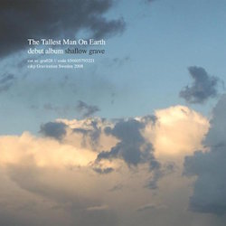

Off The Record’s debut event saw eight music-loving folk get together in the downstairs room of Coco Momo café in Holborn to listen to a couple of records separated by more than thirty years (not to mention genre). The two albums chosen (based on votes) were two debuts: Elvis Costello’s 1977 classic “My Aim Is True”, and The Tallest Man On Earth’s relatively recent 2008 debut full length, “Shallow Grave”.
As humble host and curator for the evening, I (Matt) can confess to a certain amount of trepidation beforehand, mostly involving fretting about the audio equipment and whether or not trying to transport a turntable across London would prove to be my undoing. Luckily, though, sound quality was pretty reasonable and more than adequate for the size of the room. People began to trickle in (which was my second fear: that nobody would show up) and soon we were ready to start. Keep reading...
Elvis Costello – My Aim Is True
I kicked things off with a potted history of Elvis Costello (cribbed mainly from Wikipedia) but included one of my favourite tidbits about the album, namely the “help us hype Elvis” promo card that came with the LP and saw Stiff Records effectively run a peer-to-peer marketing campaign in the late 70s.
I talked briefly about my reasons for selecting the album, which were mainly aligned with my experience of pop-punk like Green Day and realising there were bands doing more mature, varied and groundbreaking stuff decades earlier – I pointed out that hearing a complex love song like “Alison” alongside punchy pop/rock singles made more sense to me as a young man (as I was when discovering this record).
We sat in thoughtful silence (surprisingly, this didn’t feel awkward like I’d worried) and listened to the two sides, the only disturbance coming when I realised my UK edition didn’t have the final closing song “Watching the Detectives” so had to quickly switch to iTunes to make sure everyone got to hear this essential song.
Once we were done, it was over to the group to reflect. It turned out than only one other person there had heard the album before (and attended OTR on the strength of his love for it!) so everybody else was a newcomer. A couple of people were quite impressed: Elvis’s lyrics were repeatedly highlighted as clever and interesting, and some of the music was described as being good for background (say, at a party) where you might miss the subtleties or one-liners of some of the standouts.
People also spoke of the range of songwriting on display, with the references to 50s rock, reggae/dub, punk/new-wave and even country all on display in a relatively brief album. One person was surprised I’d highlighted “Alison” as an attraction when I was first discovering the record, which did leave me wondering how much I first appreciated that song when I was in full-on pop-punk mode. Someone else gave a convincing theory that “Alison” was in fact about a desire for the singer to murder his partner, which was a new one for me.
I was asked to rate the album which was a surprise but I came down on 8/10, highlighting the range of songwriting, lyrical smarts and punchiness of the overall sound. Even the detractors (who felt the slower songs weren’t always up to scratch) agreed and I think we averaged a 7/10 for the group as a whole. Congratulations, Elvis!
Interval songs: Jenny Owen Youngs / The Hold Steady
During the interval, Paul played a song by Jenny Owen Youngs called “From Here”, taken from her Batten The Hatches debut album. He talked about how he came across it and what he liked about it and we listened as a group and talked about the vocals, the unexpected changes in the chorus and how she replicated it live.
Dylan also jumped in with the opening song from the debut Hold Steady album, which was markedly downbeat (despite being called “Positive Jam”, from 2003’s Almost Killed Me). He talked about the storytelling in the song and the way the narrative threaded its way through their subsequent albums and characters. This one was popular too and I think may have gained a few fans.
The Tallest Man On Earth – Shallow Grave

Next up was the debut by Swedish folk singer Kristian Matsson, known as The Tallest Man On Earth (who, sadly, is actually quite short in real life). I talked about the obvious Dylan comparisons he always gets, and how I was initially taken to his music because of the strength of his guitar work, and later seeing him hold an entire festival crowd completely in the palm of his hand, all with just his voice and a single guitar. I also gave a quick disclaimer that the first time you heard his voice, you’d probably find it a bit weird/abrasive.
We got started and with only ten songs, “Shallow Grave” was even shorter than Elvis’s earlier debut. It started strong with plenty of head nodding and tapping feet from the audience, but gradually there was a feeling people were becoming weary of the record.
In almost no time (it felt), we were chatting through the album. This was much less universally popular: one person in particular turned out to be a huge fan and was already planning to book live tickets, but others found it repetitive and same-y. I admitted it wasn’t my favourite album of his, and in defence, I quickly played the first 30 seconds of one of his newer songs, pointing out the change in instrumentation and the more expansive songwriting. This might’ve persuaded a few folks to give poor Kristian a second chance but I don’t think he won too many new fans that evening. One criticism, perhaps, was that it was “genre music” where he did one thing and stuck with it, whereas Elvis brushed past a whole bunch of genres and standards in his debut.
Closing notes / Manic Street Preachers
Finally, Dominic played us the Manic Street Preachers’ “Little Baby Nothing” from their 1992 debut Generation Terrorists, complete with vocals by underage porn star Traci Lords, appropriate since the song is about sexual exploitation of women by men. We talked about the musical maturity, the brilliance of James Dean Bradfield’s vocals and their original plan to get Kylie Minogue to sing the vocal originally.
We wrapped things up at around 10.30pm and agreed it had been a good evening and we wanted to do it again – one piece of feedback was that the format might work better with one full album, then a collection of attendee-curated songs, introduced by each person, all matching a given theme or topic.
Watch this space for the next Off The Record event!